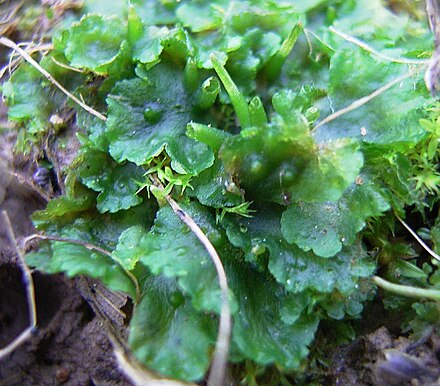

Leiosporocerotales
A Hornwort Order
Leiosporocerotales is a unique and evolutionarily significant order of hornworts (division Anthocerotophyta). It contains only a single known species, Leiosporoceros dussii, distinguished by its smooth, monolete spores and a distinct arrangement of symbiotic Nostoc colonies, suggesting it may be the sister group to all other extant hornworts.
Overview
Leiosporocerotales stands apart from other hornwort orders. It comprises a single family (Leiosporocerotaceae), genus (Leiosporoceros), and species (Leiosporoceros dussii). This unique species is found in humid, shaded habitats in the Neotropics (Central and South America, Caribbean islands).
Phylogenetic studies consistently place Leiosporocerotales as the earliest diverging lineage among living hornworts, making it crucial for understanding the evolution of the entire group and their relationship to other land plants. Its distinct features, particularly the smooth, monolete spores (lacking the typical trilete scar of other bryophytes) and the unique arrangement of its symbiotic nitrogen-fixing cyanobacteria (Nostoc), support its basal position.
Like other hornworts, it has a dominant gametophyte thallus and a dependent sporophyte, but the combination of features found in Leiosporoceros is unique.
Quick Facts
- Scientific Name: Leiosporocerotales
- Common Name: A Hornwort Order
- Genera/Species: 1 genus, 1 species (Leiosporoceros dussii)
- Distribution: Neotropics (Central/South America, Caribbean)
- Evolutionary Group: Bryophytes - Hornworts (Anthocerotophyta) - potentially sister to all other hornworts
Key Characteristics
Gametophyte (Thallus)
The gametophyte is a relatively robust, flattened, somewhat strap-shaped or fan-shaped thallus, growing prostrate on the substrate. It is solid internally, lacking complex air chambers. A unique feature is the arrangement of symbiotic Nostoc colonies: they occur in branched channels that run parallel to the growth axis and open via pores only on the ventral (lower) surface of the thallus. This contrasts with other hornworts where colonies are in internal cavities often opening dorsally.
Reproductive Structures (Gametangia)
As in other hornworts, antheridia (male) and archegonia (female) are embedded within the dorsal surface of the thallus. Fertilization requires water.
Sporophyte
The sporophyte develops from the fertilized egg and remains attached to the gametophyte. It is generally similar in overall structure to those of Anthocerotales:
- Morphology: Elongated, cylindrical, horn-like capsule that grows continuously from a basal meristem.
- Size: Can reach several centimeters in length.
- Dehiscence: Splits longitudinally into two valves from the apex downwards to release spores.
- Stomata: Possesses stomata on the capsule wall, similar to mosses and vascular plants.
- Columella: A central strand of sterile tissue runs through the capsule.
Spores and Pseudoelaters
The spores and associated structures are highly distinctive:
- Spores: Uniquely among hornworts (and most bryophytes), the spores are smooth, yellowish, ovoid, and monolete (possessing a single linear aperture or scar), rather than ornamented and tetrahedral (with a trilete scar).
- Pseudoelaters: Sterile, multicellular pseudoelaters, similar to other hornworts, are present and aid in spore dispersal.
Cellular and Chemical Features
Cells typically contain a single large chloroplast with a pyrenoid. The unique ventral channels housing Nostoc are a key anatomical feature. Like other bryophytes, they lack lignified vascular tissue.
Field Identification
Identifying Leiosporocerotales relies on recognizing its hornwort characteristics combined with its unique features, though definitive identification requires microscopy for spores.
Primary Identification Features
- Thalloid Gametophyte: Flattened, green plant body.
- Ventral Nostoc Channels/Pores: Symbiotic colonies located in channels opening only on the underside (requires careful observation, possibly sectioning).
- Long, Erect Sporophyte: Horn-like structure splitting into two valves (similar to Anthocerotales).
- Smooth, Monolete Spores: Yellowish, ovoid spores with a single slit scar (requires microscopy). This is the most definitive feature.
Secondary Identification Features
- Habitat: Moist, shaded soil or rocks in Neotropical forests.
- Robust Thallus: Often appears somewhat thicker or more solid than some other hornworts.
- Single Large Chloroplast: Visible with high magnification.
Seasonal Identification Tips
Observe both generations:
- Gametophyte: Present year-round in suitable habitats. Look for the thallus shape and attempt to observe ventral pores/channels.
- Sporophyte: Seasonal, appearing after fertilization. Look for the long, horn-like structures splitting into two valves. Spore examination requires collecting mature, dehiscing sporophytes.
Common Confusion Points
Leiosporocerotales can be confused with:
- Anthocerotales (e.g., Anthoceros, Phaeoceros): Share the long, erect sporophyte splitting into two valves, but Anthocerotales have ornamented, trilete (tetrahedral) spores and different Nostoc colony arrangements (internal cavities, not ventral channels).
- Other Hornwort Orders: Differ in sporophyte morphology (Notothyladales - small; Dendrocerotales - often epiphytic) and/or spore characteristics.
- Thalloid Liverworts: Lack the characteristic horn-like sporophyte with basal meristem, possess oil bodies, and lack ventral Nostoc channels.
Field Guide Quick Reference
Look For (Gametophyte):
- Flattened, green thallus
- Nostoc channels opening ventrally
- No oil bodies
- Single large chloroplast per cell
Look For (Sporophyte & Spores):
- Long, erect capsule
- Dehisces into 2 valves
- Spores: Smooth, yellow, ovoid, monolete (Microscopic ID)
- Arises directly from gametophyte
Notable Examples
This order contains only one known species.

Leiosporoceros dussii
(No common name)
The sole representative of the order Leiosporocerotales. Found in the Neotropics, it grows as a dark green thallus on moist soil and rocks. It is distinguished by its unique ventral Nostoc channels and, most definitively, its smooth, yellowish, monolete spores. Its sporophyte resembles those of Anthocerotales.
Phylogeny and Classification
Leiosporocerotales represents a crucial lineage for understanding hornwort evolution. Molecular phylogenetic analyses consistently place it as the sister group to all other extant hornworts. This basal position means its unique combination of features (like monolete spores and ventral Nostoc channels) may represent ancestral traits for the hornwort lineage or early diverging specializations.
Its distinctiveness warrants its placement in its own class, Leiosporocerotopsida, separate from the class Anthocerotopsida which contains all other hornwort orders. Studying Leiosporoceros provides vital clues about the early evolution of land plants and the diversification of bryophytes.
Position in Plant Phylogeny
- Kingdom: Plantae
- Clade: Embryophytes (Land Plants)
- Division: Anthocerotophyta (Hornworts)
- Class: Leiosporocerotopsida
- Order: Leiosporocerotales
- Family: Leiosporocerotaceae
- Genus: Leiosporoceros
- Species: Leiosporoceros dussii
Evolutionary Significance
Leiosporocerotales is highly significant evolutionarily:
- Basal Hornwort Lineage: Represents the earliest diverging branch of living hornworts, crucial for reconstructing ancestral hornwort traits.
- Unique Spore Morphology: The smooth, monolete spores are unique among bryophytes and challenge assumptions about spore evolution in early land plants.
- Unique Symbiosis Structure: The ventral Nostoc channels offer a different model for cyanobacterial symbiosis compared to other hornworts.
- Phylogenetic Anchor: Helps understand the relationships between hornworts and other major plant groups (mosses, liverworts, vascular plants).